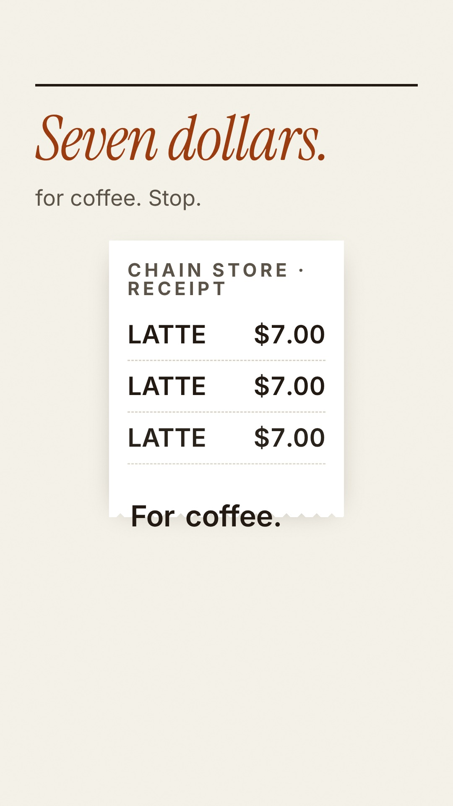

This is the real 77.5-second advert a student crew of AI specialists made for a coffee brand — briefed, built, checked and argued over, one prompt at a time. This page teaches you the exact prompt series behind it, stage by stage.
Three open-source tools did the heavy lifting: gstack supplied the crew, Jev refereed every gate, and showtime was the studio that built the film. You will learn to drive all three with prompts.

Watch · The finished film
This is not a mock-up or a trailer for the course — it is the actual film the rest of this page teaches you to make: the BrewClub pilot, rendered end-to-end by Muse AI, with gstack supplying the crew, Jev refereeing the gates and showtime doing the rendering. Watch it first; then scroll down and learn exactly how it was made, prompt by prompt.
Watch on YouTube ↗Citation: “Muse AI brewclub pilot final 1080 1920 oct2026” — YouTube Short, the delivered Stage 8 master: 1080×1920 · 77.5 s · −14 LUFS · captions burned in. If the player above is blocked where you are, the YouTube link is the film.
01 · The toolkit
Nobody “just asked an AI for a video”. The pilot was made the way real films are made: a crew with jobs, a referee at every decision, and a studio that does the building. Here is who does what.
Open source · by Garry Tan · free to use
gstack is a pack of specialist AI roles — a CEO, a product manager, an engineer, a QA tester, a DevOps hand — plus the video specialists this project added. Each one does exactly one job, and you brief each one in writing before it starts. Process arguments are settled by the roles; technical arguments are settled by whoever has the evidence.
The golden rule of the whole course lives here: a good prompt is a good brief — one job, the right references, a checkable finish line, and a clear list of what is out of scope.
Real example from the pilot
The scriptwriter was briefed to write the voiceover first and fit it to the target length — because every later stage (storyboard, build, captions) would be timed to that voice read. One brief, one job, huge downstream effect.
TypeSafe AI's decision model · the gate judge
At each stage gate, someone has to say: proceed, fix it first, or escalate to a human. Jev is a decision model that reads the evidence and answers with a verdict and a confidence score — so you can see how sure it is, not just what it picked.
In the pilot, Jev ran in shadow mode: it advised, and humans decided. That is the safe way to adopt any judge — let it prove itself on real calls before you hand it any authority. And there is a kill switch: a human can bypass Jev entirely.
Real readings from the pilot
Concept gate: proceed at 0.51 — barely sure, so the human read Jev's notes before agreeing. Script gate: proceed at 0.95 — the strongest advisory of the run, no rework ordered. Storyboard gate: proceed at 0.86. Try the confidence rule yourself in the slider below the pipeline.
Open source · by Favio Vazquez · runs on your own machine
showtime is the production studio: it builds scenes, renders the video, records the voiceover, lays down the music bed, burns in the captions and runs the machine QA checks. It is free and runs locally — no studio hire, no render farm.
The crew (gstack) tells it what to build, stage by stage. The studio never decides the story — it executes briefs, exactly like a real production floor.
Real example from the pilot
All 16 scenes of the BrewClub film were built as separate motion fragments, then merged in storyboard order into one 77.5-second vertical master — rendered, captioned and loudness-checked to −14 LUFS by the studio pipeline.
02 · The pipeline
Every stage ends at a gate. Some gates are hard stops — a human must decide before anything moves. Others are machine checks that block automatically on a fail. Nothing builds past a hard stop without a human. Click a stage to open it.
Try it · The referee's rule
When Jev advises at a gate, its confidence score routes the decision. Drag the slider and watch the routing change. This is the real rule from the pilot's gate design — the slider itself is a teaching model, not a live call to Jev.
Notice the lesson in the first button: 0.51 is not a strong signal. That is exactly why the human read Jev's notes at the concept gate instead of just nodding. Confidence is a dial, not a verdict.
03 · Prompt workshop
These are the prompt patterns that actually made the film — one per stage, with the real BrewClub example beside each one. Copy a pattern, swap in your own product, and run it. Short sessions beat one long cram: one stage a day is a good pace.
Before any creative work, the crew gets a one-page brief. It fixes the product, the audience, and the one-sentence contract the whole film must keep — plus what must appear and what must never appear. Every later argument is settled by pointing back at this page.
Write a one-page brief for a short product video: - Product: [what it is, in one line] - Audience: [who it is for, specifically] - One-sentence contract: "This video tells [audience] that [the one claim]." - Must include: a hook in the first 3 seconds, the value proposition, a call to action - Must avoid: [claims we cannot prove, anything off-brand]
Real BrewClub example
The contract: “This video tells urban professionals tired of $7 chain coffee that café-grade coffee at home costs about forty cents a cup.” One sentence — and every concept, line and shot was judged against it.
The gate: 🟥 HUMAN — a person approves the brief before anything else exists.
Try it yourself
Write a one-sentence contract for a video about a school canteen snack. If it needs the word “and”, it is two contracts — pick one.
The creative-director pitches several genuinely different directions, not four versions of the same idea. A human picks exactly one. The test for a weak concept is the transplant test: cover the logo — if you cannot tell whose video it is, the concept fails.
Give me 4 concepts for this video: 3 structurally different + 1 wildcard. For each: title, one-line logline, narrative shape, the first-3-seconds hook, how it uses the founder-deadpan formula, and why it fits the brief. Mark exactly ONE as RECOMMENDED, with a reason. Also show me the glossy category-default version — so we can reject it on purpose.
Real BrewClub example
The winner was C1 “The Receipt”: a founder unrolls a comically long $7 receipt — it is the hook, the evidence and the punchline in one prop. Parked: C2 “The 7:02 Race”, C3 “Exhibit A”, wildcard W1 “Planet Coffee”. Deliberately rejected: a glossy lifestyle coffee ad (slow-mo beans, sunrise pour-over) — it failed the transplant test on every line.
The gate: 🟥 HUMAN — a person picks ONE concept. Jev advised “proceed” at just 0.51 here, so the human read the notes first.
Try it yourself
Run the transplant test on a real advert you saw this week. Cover the logo mentally — could it be selling a competitor's product?
The voiceover is written and recorded before anything is drawn, because the real voice read becomes the timing truth for the whole film. In the same stage, the sound-designer offers music beds and the voice-director offers narrators — a human locks all three choices.
Draft the voiceover script FIRST, fitted to [target length]: - One short line per beat; deadpan; the hook lands in line 1 - Open on the problem, end on the call to action Then propose 3 music beds and 3 narrator voices for me to choose from. Mark exactly one of each as recommended, with a reason.
Real BrewClub example
16 lines, opening “Seven dollars. For coffee. Stop.” and closing “Stop overpaying. Start brewing.” Locked choices: music bed A Honest Strum, narrator A — a steady founder voice. The recorded read ran 77.5 seconds, and that number ruled every later stage.
The gate: 🟥 HUMAN — a person locks the script, the music bed and the narrator. Jev's read here: proceed at 0.95, its strongest of the run.
Try it yourself
Read your Stage 0 contract aloud and time it. That timing — not your target — is now your film's real length.
The storyboard-artist turns the script into shots: one shot per voiceover line, each with a time range taken from the actual voice recording, a visual description, and the on-screen text. This stage carries the course's iron rule — learn it by heart.
Storyboard the locked script: one shot per voiceover line.
For each shot: time range, visual description, on-screen text.
IRON RULE: time every shot to the REAL voice read — never to the
target duration. A shot's length = its line's length in the recording.Real BrewClub example
16 shots for 16 lines, timed to the 77.5-second read. This rule exists because a full cut was once rejected for being timed to the 75-second target instead — the pictures drifted away from the words, and the whole cut had to be rebuilt.
The gate: 🟥 HUMAN — a person approves the board. Jev advised proceed at 0.86.
Try it yourself
Take three lines of any speech and storyboard them: one shot each, timed to a real recording of your own voice.
An animatic is the storyboard panels played in order with the real voiceover and music. It answers one question — does the film feel right at this pace, in this order? Fixing a pacing problem here costs minutes; fixing it after the full build costs a re-render of everything.
Build an animatic: storyboard panels in order + the real voiceover + the locked music bed. Flag any shot that feels too long or too short, and any two shots that would work better swapped.
Real BrewClub example
The 77.5-second animatic was screened before a single scene was animated. The human's sign-off was specifically on pace and order — the two things that are cheap to fix now and painful later.
The gate: 🟥 HUMAN — a person approves pace and order.
Try it yourself
Play your 3-shot storyboard as a slideshow over your voice recording. Where did you get bored? That is an animatic note.
Now the motion-designers build each scene for real and the editor merges them in storyboard order. Builders work in parallel, each inside their own brief. The director does not take “done” on trust — they verify every builder's output with their own checks.
Build scene [N] to the locked storyboard shot: - Match the shot's exact time slot from the voice read - On-screen text: use the locked script wording ONLY — never improvise copy - Stay inside your folder; flag anything outside your brief instead of fixing it
Real BrewClub example
All 16 motion fragments were built separately, then merged in storyboard order. “Use the locked wording only” sounds obvious — in Stage 7 you will see what happened when one designer improvised anyway.
The gate: internal — the director verifies each scene before the merge.
Try it yourself
Write a build brief for one scene of your film. Could a stranger build exactly what you pictured from the brief alone?
QA is automatic: does the render play, are the audio levels right, are the captions actually there? Zero fails means go. But learn QA's honest limit — it checks the file, not the film. It cannot tell a good joke from a bad one, or a true claim from a false one.
Run full QA on the render: file integrity, duration, audio loudness against the −14 LUFS target, captions present on every line. Report fails and warnings separately. 0 fail = proceed; any fail = block.
Real BrewClub example
The pilot's first full render: 0 fail, 22 warnings — proceed, because 0 fail means go. One marginal warning (a headline 5 px past the phone-safe zone) was fixed anyway. And in an earlier planted-defect trial, QA passed a cut with 3 real defects in it — which is why the next stage exists.
The gate: ⚙️ MACHINE — automatic, and it blocks on any fail.
Try it yourself
List three things a machine can check about a video, and three things only a viewer can judge. Keep both lists — you will need them at Stage 7.
Two independent critics watch the film and answer one question: WOULD I POST THIS? Every finding must point at the exact frame — and the crew verifies each finding at that frame before acting on it, because even critics can be wrong.
Review this cut as an independent critic. For every problem: name the shot, the timecode and the frame evidence. Judge the jokes, the claims and the honesty labels — not the file. End with one line: WOULD I POST THIS: yes / no.
Real BrewClub catches
Round 1 found: invented on-screen words (“Every day”) where the locked script said “for coffee. Stop.”; karaoke captions hidden behind the shredder scene; a coffee cup overlapping the caption zone; and a missing “Fictional brand” label. One finding was dismissed with evidence — “no narration” — because the mix report showed the voice 19 dB above the music. Fixes were made, round 2 checked the pixels, and both critics said: ship.
The gate: ⚙️ + 🟥 — a critic's “no” blocks exactly like a QA fail, until the re-cut passes.
Try it yourself
Watch any advert and write three critic findings, each with a timecode. Vague (“it's boring”) doesn't count — point at a frame.
The editor exports the final master to spec and the job is done — except the last step. Publishing is irreversible: once a video is public, you cannot unpublish it from people's memories. So the upload button always belongs to a human.
Export the final master: 1080×1920, burned-in captions, −14 LUFS. Name it, log its exact duration and spec, and STOP. Do not publish — hand it to the human for the upload decision.
Real BrewClub example
The delivered master: final-2.mp4 — 1080×1920, 77.53 s, −14 LUFS, captions burned in. It stayed internal until a human made the publishing call — it is now live on YouTube as “Muse AI brewclub pilot final 1080 1920 oct2026”; watch it in The film section at the top of this page. Still owed on it: a 30-second cutdown and a 16:9 version.
The gate: 🟥 HUMAN — publishing is irreversible, so it always waits for a person.
Try it yourself
Write your own delivery spec for your class film: size, length, loudness, captions — and who is allowed to press upload.
04 · The gates game
Five real moments from the pilot's production. For each one, decide: does a human stop and choose, does the machine wave it through, or is it blocked until fixed? Your score lives only while this page is open.
SCORE: 0 / 5 · ANSWERED: 0 / 5
05 · Prompt library
Every crew member in the pilot was briefed with this exact shape. Learn why each line exists: one job only (three jobs = all done badly); only 2–3 references (context is fuel, too much is noise); a checkable “done when” (a wish can't be gated, a contract can); and “out of scope” — the most important line, because it stops the concept artist rewriting the script.
# Role: <one job only> Job: <project name> Mode: studio Read: <the 2–3 references that matter, nothing more> Inputs (read-only): <brief, decisions, previous stage output> You own (write only here): <your folder> Deliver: <the exact deliverable + its format> Done when: <a checkable condition> Out of scope: <what you must NOT touch>
Stage 0 · Brief
“Write a one-page brief: product, audience, one-sentence contract, must-include, must-avoid.”
Stage 1 · Concept
“Pitch 4 concepts (3 different + 1 wildcard) for [product] using the founder-deadpan formula; mark exactly one recommended.”
Stage 2 · Script + sound
“Draft the voiceover fitted to [length] first; then offer 3 music beds and 3 narrators to choose from.”
Stage 3 · Storyboard
“One shot per VO line, timed to the real voice read — never to the target duration.”
Stage 4 · Animatic
“Play the panels in order over the real VO and music; flag every pacing problem.”
Stage 5 · Build
“Build scene [N] to its locked shot and time slot; locked script wording only.”
Stage 6 · QA
“Check the render: integrity, levels, captions. Fails and warnings listed separately; 0 fail = go.”
Stage 7 · Critic
“Judge jokes, claims and labels with frame evidence. End with: WOULD I POST THIS — yes or no.”
Stage 8 · Delivery
“Export the master to spec, log it, and stop. Publishing is the human's call.”
Any stage · The honesty rule
“If the brand is fictional, every brand and offer frame carries a ‘Fictional brand — pilot film’ label.”
06 · Glossary
Tap a card to flip it. If you can explain all twelve to a friend, you can brief a crew.
07 · Your turn
Same pipeline, smaller film. Pick a real product you know (a snack, a school club, a family recipe), run all nine stages with the prompts from the workshop, and finish with a 30-second cut. Work through it in short sessions — one stage at a time.
Choose your product, then write the one-sentence contract: who it tells, and the one claim it makes. If the claim isn't provable, soften it to an opinion — like the pilot's “Tastes like a café cup to us.”
Use the Stage 0 pattern: product, audience, contract, must-include (3-second hook, value prop, CTA), must-avoid. Label your brand fictional if it is — on every brand frame.
Brief → concept → script + sound → storyboard → animatic → build → QA → critic → delivery. Record your own voice read and time everything to it. Stop at every human gate and actually decide.
Export your master, then make the cutdown: the same film, re-edited to 30 seconds. Get a critic — a friend counts — to answer “would I post this?” before you show anyone else.
Steal the formula, not the video.